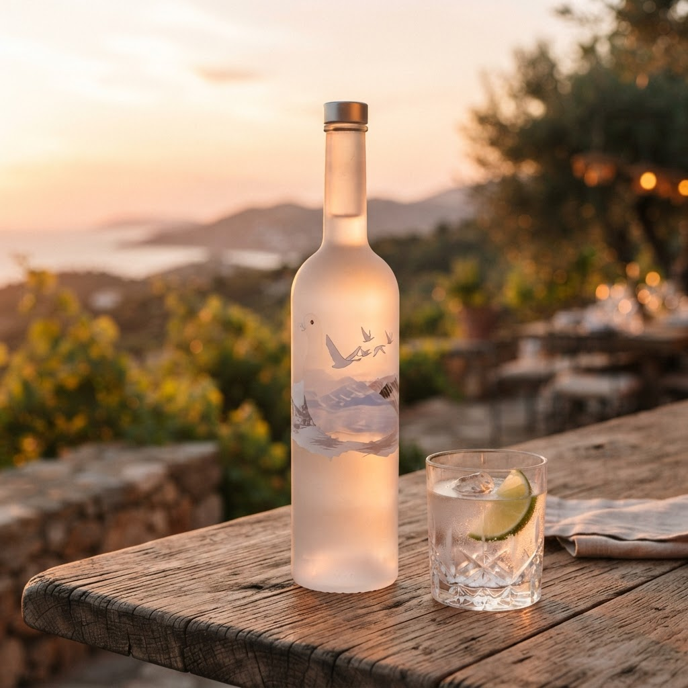
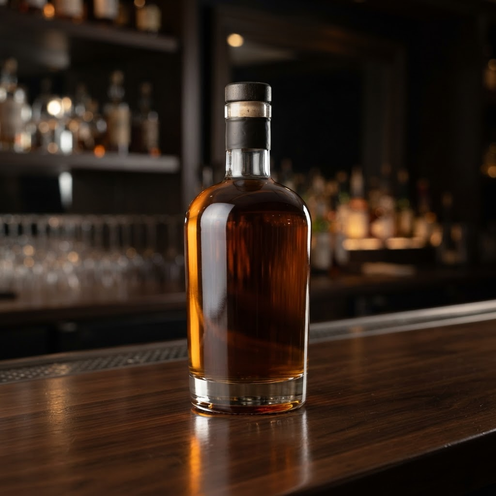
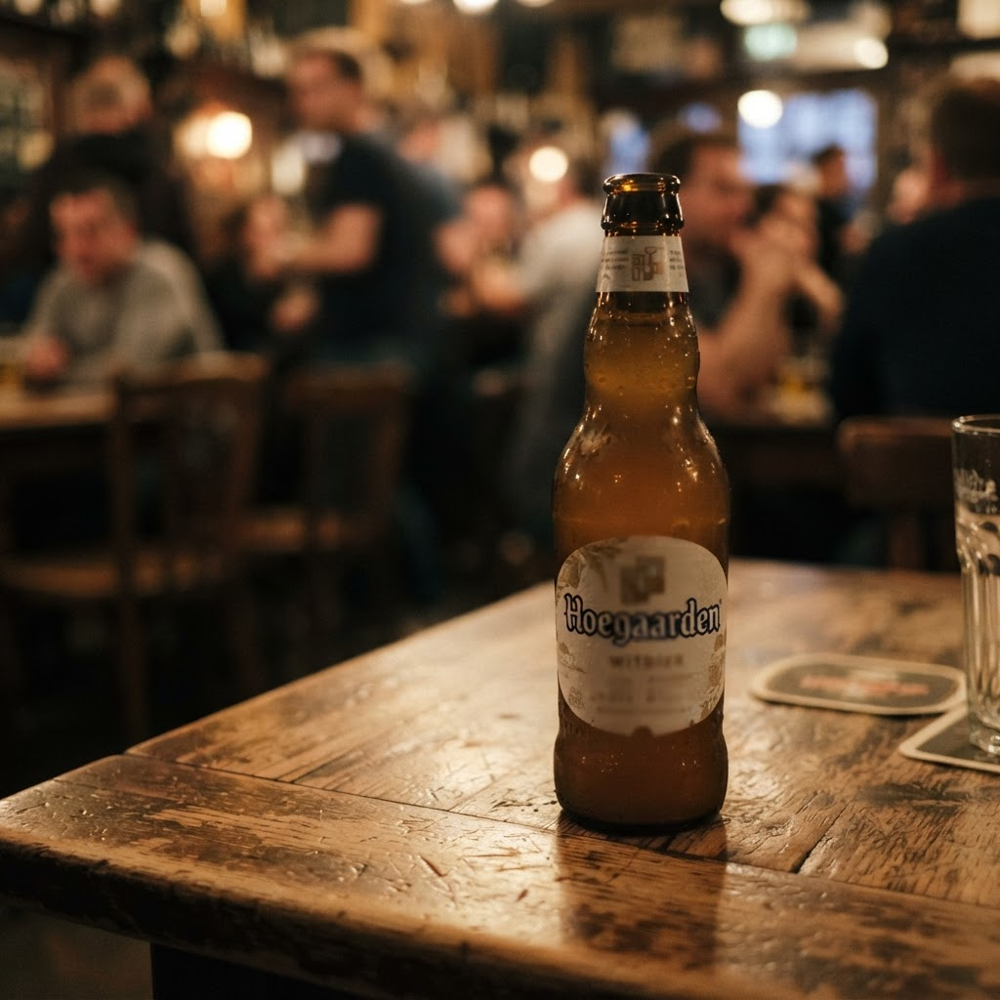

Сколько стоит водка 5 литров купить спб с доставкой в Выборгском районе

Содержание
Выборгский район отличается высокой плотностью застройки и динамичным ритмом жизни, требующим оперативных решений в бытовых вопросах. Для жителей северных кварталов возможность оформить ночную доставку алкоголя за один час становится ключевым преимуществом при планировании досуга.
Сколько стоит водка 5 литров купить спб с доставкой в Выборгском районе
Поиск алкогольной продукции в крупной таре через сомнительные каналы часто оборачивается финансовыми потерями и риском для здоровья. Многих привлекает запрос: сколько стоит водка 5 литров купить спб с доставкой в Выборгском районе, однако важно осознавать юридическую сторону процесса. Согласно действующим законодательным нормам, продажа этилового спирта и крепких напитков в канистрах или несертифицированных пятилитровых емкостях дистанционным способом запрещена. Профессиональные участники рынка работают исключительно с лицензированными товарами в стандартной потребительской упаковке, объем которой регламентирован государственными стандартами. Обращение к нелегальным курьерам, предлагающим сомнительные объемы жидкости, ведет к получению фальсификата, который не проходит систему контроля качества. Безопасность потребителя напрямую зависит от легальности цепочки поставок. Выбор проверенного сервиса, гарантирующего соблюдение всех протоколов безопасности при ночной логистике, является единственным способом избежать встречи с контрафактом. Попытка сэкономить на покупке больших объемов у частных лиц неизбежно приведет к приобретению суррогата, так как ни один добросовестный производитель не выпускает крепкий алкоголь в пластиковой таре такого литража.
Почему ночная доставка за час — это приоритет
Оперативная работа курьерских служб в ночное время строится на принципах прозрачности и соблюдения временных регламентов. Когда вы заказываете напитки с доставкой за шестьдесят минут, вы оплачиваете логистику сертифицированного продукта, прошедшего государственную проверку. Главная ошибка покупателя заключается в попытке найти решение «оптом» в обход правового поля, что в корне противоречит задаче качественного сервиса. Мы фокусируемся на предоставлении услуги, где скорость не идет в ущерб законности, обеспечивая доставку только оригинальной продукции в рамках разрешенной розничной реализации. Использование цифровых площадок для заказа алкоголя требует от клиента внимательности к источнику предложения: если вам предлагают пять литров в одной упаковке, это гарантированный признак нарушения закона. Настоящая аналитика рынка показывает, что спрос на ночную доставку удовлетворяется легальными точками, которые привозят заказы в стандартных стеклянных бутылках. Ваша безопасность в Выборгском районе обеспечивается отказом от идеи покупки «пятилитровок» и выбором в пользу стандартного розничного ассортимента, доступного к оперативной транспортировке.
Можно ли найти качественный алкоголь в пятилитровой таре?
Качественный крепкий алкоголь не производится и не продается в пластиковых пятилитровых канистрах для розничных покупателей. Любое подобное предложение является прямым свидетельством продажи контрафактной и опасной для жизни продукции. Выбирайте только сертифицированный товар в стандартной упаковке.
Итог
Итог всегда один: назвать следующий шаг покупателю — оформить заказ и получить его в течение часа в своём районе.
Заказать доставку
Оформите заказ сейчас: привезём за 40-60 минут в любой район Петербурга, круглосуточно.
ПризывНаши статьи

Доставка алкоголя на дом с доставкой в Выборгском районеВыборгский район отличается высокой плотностью жилой застройки и сложной логистикой в ночное время. Оперативная доставка алкоголя на дом с доставкой в Выборг… Доставка водки домой спб с доставкой в Выборгском районеВыборгский район — одна из самых густонаселенных локаций Петербурга, где спрос на оперативный сервис растет пропорционально плотности застройки. Потребность …
Доставка водки домой спб с доставкой в Выборгском районеВыборгский район — одна из самых густонаселенных локаций Петербурга, где спрос на оперативный сервис растет пропорционально плотности застройки. Потребность … Доставка алкоголя на дом круглосуточно санкт с доставкой в Выборгском районеВыборгский район характеризуется высокой плотностью жилой застройки и активным ритмом жизни. В таких условиях доставка алкоголя на дом круглосуточно санкт ст…
Доставка алкоголя на дом круглосуточно санкт с доставкой в Выборгском районеВыборгский район характеризуется высокой плотностью жилой застройки и активным ритмом жизни. В таких условиях доставка алкоголя на дом круглосуточно санкт ст…
Доставка пива спб с доставкой в Выборгском районеВыборгский район — одна из самых густонаселенных локаций Петербурга, где спрос на оперативный сервис стабильно высок. Когда вечер переходит в ночь, поиск усл…